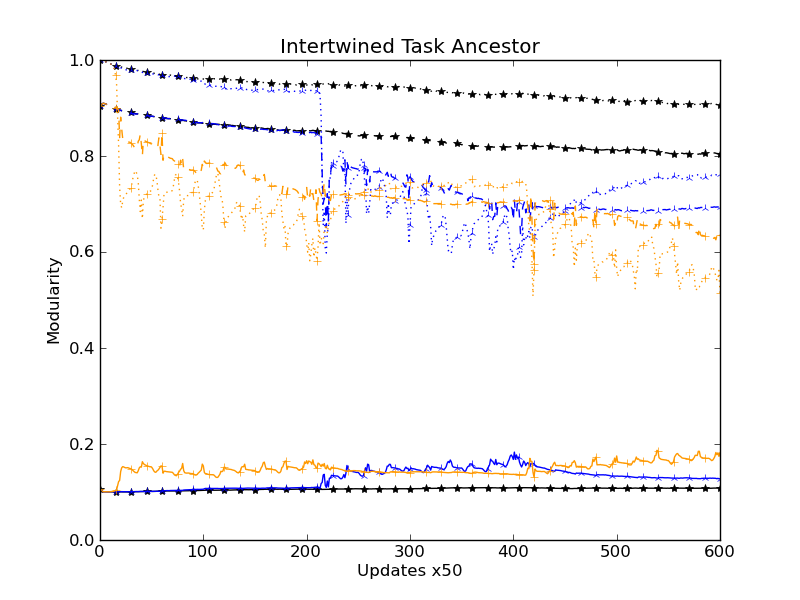

STATUS:
LOG:
rosiec@atlantis:~/research/Devolab Research/evolution_of_modularity/raw_data/062$ for i in c*_i*_??????; do echo $i; cd $i/data/; for j in two_task*.dat*; do python ../../../../../scripts/evolution_of_modularity_pipelines/calculate_physical_modularity.py 11 12 16 17 $j > task_physical_modularity__$j; done; cd ../../; done;
… etc.
rm control_intertwined__organisms_doing_fluctuating_task.csv ; for i in c*_i*_??????; do echo $i; cd $i/data/; python ../../../../../scripts/common\ modules\ and\ helper\ scripts/extract_single_column_to_csv.py --dimensionality 1 -s " " 3 tasks.dat* >> ../../control_intertwined__organisms_doing_fluctuating_task.csv ; cd ../../; done
… etc.
rosiec@malp:/Volumes/rosiec/research/Devolab Research/evolution_of_modularity/raw_data/062$ python ../../../scripts/generate_graphs_from_raw_data/plot_from_csv.py -i -o -t "Separated Task Ancestor" -x "Updates x50" -y "Modularity" -w "Fluct Ct" comparitive_physical_functional_modularity_task_ct__separated__two_task.png control_s*__functional_modularity.csv control_s*__physical_modularity.csv control_separated__organisms_doing_fluctuating_task.csv noreward_first_s*__functional_modularity.csv noreward_first_s*__physical_modularity.csv noreward_first_separated__organisms_doing_fluctuating_task.csv punish_first_s*__functional_modularity.csv punish_first_s*__physical_modularity.csv punish_first_separated__organisms_doing_fluctuating_task.csv
LAB MTG NOTES:
STATUS:
LOG:
rosiec@atlantis:~/research/Devolab Research/evolution_of_modularity/raw_data/062$ for i in *_??????; do echo $i; cd $i/data/; rm fluct_task_physical_modularity__two_task_physical_modularity__stats.csv ;python ../../../../../scripts/common\ modules\ and\ helper\ scripts/extract_single_column_to_csv.py -s "," -c 2 task_physical*-?.dat* task_physical*-??.dat* task_physical*-???.dat* task_physical*-????.dat* task_physical*-?????.dat* >> fluct_task_physical_modularity__two_task_physical_modularity__stats.csv; cd ../../; done for i in *_??????; do echo $i; cd $i/data/; rm backbone_task_physical_modularity__two_task_physical_modularity__stats.csv ;python ../../../../../scripts/common\ modules\ and\ helper\ scripts/extract_single_column_to_csv.py -s "," -c 1 task_physical*-?.dat* task_physical*-??.dat* task_physical*-???.dat* task_physical*-????.dat* task_physical*-?????.dat* >> backbone_task_physical_modularity__two_task_physical_modularity__stats.csv; cd ../../; done
rm punish_first_separated__fluct_task_physical_modularity.csv; for i in p*_s*_??????; do cd $i/data/; python ../../../../../scripts/common\ modules\ and\ helper\ scripts/extract_single_column_to_csv.py --dimensionality 1 -s "," 1 fluct_task_physical_modularity__two_task_physical_modularity__stats.csv >> ../../punish_first_separated__fluct_task_physical_modularity.csv; cd ../../; done rm noreward_first_separated__fluct_task_physical_modularity.csv; for i in n*_s*_??????; do cd $i/data/; python ../../../../../scripts/common\ modules\ and\ helper\ scripts/extract_single_column_to_csv.py --dimensionality 1 -s "," 1 fluct_task_physical_modularity__two_task_physical_modularity__stats.csv >> ../../noreward_first_separated__fluct_task_physical_modularity.csv; cd ../../; done rm control_separated__fluct_task_physical_modularity.csv; for i in c*_s*_??????; do cd $i/data/; python ../../../../../scripts/common\ modules\ and\ helper\ scripts/extract_single_column_to_csv.py --dimensionality 1 -s "," 1 fluct_task_physical_modularity__two_task_physical_modularity__stats.csv >> ../../control_separated__fluct_task_physical_modularity.csv; cd ../../; done rm punish_first_intertwined__fluct_task_physical_modularity.csv; for i in p*_i*_??????; do cd $i/data/; python ../../../../../scripts/common\ modules\ and\ helper\ scripts/extract_single_column_to_csv.py --dimensionality 1 -s "," 1 fluct_task_physical_modularity__two_task_physical_modularity__stats.csv >> ../../punish_first_intertwined__fluct_task_physical_modularity.csv; cd ../../; done rm noreward_first_intertwined__fluct_task_physical_modularity.csv; for i in n*_i*_??????; do cd $i/data/; python ../../../../../scripts/common\ modules\ and\ helper\ scripts/extract_single_column_to_csv.py --dimensionality 1 -s "," 1 fluct_task_physical_modularity__two_task_physical_modularity__stats.csv >> ../../noreward_first_intertwined__fluct_task_physical_modularity.csv; cd ../../; done rm control_intertwined__fluct_task_physical_modularity.csv; for i in c*_i*_??????; do cd $i/data/; python ../../../../../scripts/common\ modules\ and\ helper\ scripts/extract_single_column_to_csv.py --dimensionality 1 -s "," 1 fluct_task_physical_modularity__two_task_physical_modularity__stats.csv >> ../../control_intertwined__fluct_task_physical_modularity.csv; cd ../../; done
rm punish_first_separated__backbone_task_physical_modularity.csv; for i in p*_s*_??????; do cd $i/data/; python ../../../../../scripts/common\ modules\ and\ helper\ scripts/extract_single_column_to_csv.py --dimensionality 1 -s "," 1 backbone_task_physical_modularity__two_task_physical_modularity__stats.csv >> ../../punish_first_separated__backbone_task_physical_modularity.csv; cd ../../; done; rm noreward_first_separated__backbone_task_physical_modularity.csv; for i in n*_s*_??????; do cd $i/data/; python ../../../../../scripts/common\ modules\ and\ helper\ scripts/extract_single_column_to_csv.py --dimensionality 1 -s "," 1 backbone_task_physical_modularity__two_task_physical_modularity__stats.csv >> ../../noreward_first_separated__backbone_task_physical_modularity.csv; cd ../../; done; rm control_separated__backbone_task_physical_modularity.csv; for i in c*_s*_??????; do cd $i/data/; python ../../../../../scripts/common\ modules\ and\ helper\ scripts/extract_single_column_to_csv.py --dimensionality 1 -s "," 1 backbone_task_physical_modularity__two_task_physical_modularity__stats.csv >> ../../control_separated__backbone_task_physical_modularity.csv; cd ../../; done; rm punish_first_intertwined__backbone_task_physical_modularity.csv; for i in p*_i*_??????; do cd $i/data/; python ../../../../../scripts/common\ modules\ and\ helper\ scripts/extract_single_column_to_csv.py --dimensionality 1 -s "," 1 backbone_task_physical_modularity__two_task_physical_modularity__stats.csv >> ../../punish_first_intertwined__backbone_task_physical_modularity.csv; cd ../../; done; rm noreward_first_intertwined__backbone_task_physical_modularity.csv; for i in n*_i*_??????; do cd $i/data/; python ../../../../../scripts/common\ modules\ and\ helper\ scripts/extract_single_column_to_csv.py --dimensionality 1 -s "," 1 backbone_task_physical_modularity__two_task_physical_modularity__stats.csv >> ../../noreward_first_intertwined__backbone_task_physical_modularity.csv; cd ../../; done; rm control_intertwined__backbone_task_physical_modularity.csv; for i in c*_i*_??????; do cd $i/data/; python ../../../../../scripts/common\ modules\ and\ helper\ scripts/extract_single_column_to_csv.py --dimensionality 1 -s "," 1 backbone_task_physical_modularity__two_task_physical_modularity__stats.csv >> ../../control_intertwined__backbone_task_physical_modularity.csv; cd ../../; done
rosiec@malp:/Volumes/rosiec/research/Devolab Research/evolution_of_modularity/raw_data/062$ python ../../../scripts/generate_graphs_from_raw_data/plot_from_csv.py -i -o -t "Separated Task Ancestor" -x "Updates x50" -y "Modularity" physical_modularity_by_task__separated__two_task.png control_s*__functional_modularity.csv control_s*__backbone_task_physical_modularity.csv control_s*__fluct_task_physical_modularity.csv noreward_first_s*__functional_modularity.csv noreward_first_s*__backbone_task_physical_modularity.csv noreward_first_s*__fluct_task_physical_modularity.csv punish_first_s*__functional_modularity.csv punish_first_s*__backbone_task_physical_modularity.csv punish_first_s*__fluct_task_physical_modularity.csv python ../../../scripts/generate_graphs_from_raw_data/plot_from_csv.py -i -o -t "Intertwined Task Ancestor" -x "Updates x50" -y "Modularity" physical_modularity_by_task__intertwined__two_task.png control_i*__functional_modularity.csv control_i*__backbone_task_physical_modularity.csv control_i*__fluct_task_physical_modularity.csv noreward_first_i*__functional_modularity.csv noreward_first_i*__backbone_task_physical_modularity.csv noreward_first_i*__fluct_task_physical_modularity.csv punish_first_i*__functional_modularity.csv punish_first_i*__backbone_task_physical_modularity.csv punish_first_i*__fluct_task_physical_modularity.csv
STATUS:
LOG:
[caninoko@gateway]:[4]:[/mnt/scratch/caninoko/063]:$ mkdir populations/; for i in *_??????; do if [ ! -e $i.tar.gz ] ; then mkdir $i/data/populations/; mv $i/data/detail* $i/data/populations/; mv $i/data/populations/ ./populations/$i; tar -cvf $i.tar.gz $i ; else : ; fi; done rosiec@atlantis:~/research/Devolab Research/evolution_of_modularity/raw_data/063$ scp caninoko@gateway.hpcc.msu.edu:/mnt/scratch/caninoko/063/*.tar.gz ./ rosiec@atlantis:~/research/Devolab Research/evolution_of_modularity/raw_data/063$ for i in *.tar.gz; do tar -xvf $i; done; rm *.tar.gz
#!/bin/bash
## call this script with one parameter, which the the stage to perform
MINPARAMS=1
USAGE="usage: $0 <STAGE #>"
STAGE1="Pull out only the organisms that do both tasks from the individual modularity files (one file for each sample in a run, a jillion files."
STAGE2="Generate the Physical Modularity Measure File (one for each sample in a run, a jillion files)"
STAGE3="generate the stats for the physical modularity measures, and aggregate into a single file for a run"
STAGE4="aggregate the physical modularity measures - fluctuating task"
STAGE5="aggregate the task organism counts."
STAGE6="generate the graphs"
if [ $# -lt "$MINPARAMS" ]
then
echo "Incorrect parameters."
echo $USAGE
echo "Stage 1: $STAGE1"
echo "Stage 2: $STAGE2"
echo "Stage 3: $STAGE3"
echo "Stage 4: $STAGE4"
echo "Stage 5: $STAGE5"
echo "Stage 6: $STAGE6"
exit 1
fi
######## STAGE 1 #########
##Pull out only the organisms that do both tasks from the individual modularity files
if [ $1 -eq 1 ]
then
echo $STAGE1
screen -dmS c_i bash -c 'for i in c*_i*_??????; do echo $i; cd $i/data/; rm two_task_only__*.dat*; python ../../../../../scripts/common\ modules\ and\ helper\ scripts/extract_line_on_condition.py 2 " > 1" two_task_only__ individual_modularity-?.dat* individual_modularity-??.dat* individual_modularity-???.dat* individual_modularity-????.dat* individual_modularity-?????.dat*; cd ../../; done;'
screen -dmS c_s bash -c 'for i in c*_s*_??????; do echo $i; cd $i/data/; rm two_task_only__*.dat*; python ../../../../../scripts/common\ modules\ and\ helper\ scripts/extract_line_on_condition.py 2 " > 1" two_task_only__ individual_modularity-?.dat* individual_modularity-??.dat* individual_modularity-???.dat* individual_modularity-????.dat* individual_modularity-?????.dat*; cd ../../; done;'
screen -dmS n_i bash -c 'for i in n*_i*_??????; do echo $i; cd $i/data/; rm two_task_only__*.dat*; python ../../../../../scripts/common\ modules\ and\ helper\ scripts/extract_line_on_condition.py 2 " > 1" two_task_only__ individual_modularity-?.dat* individual_modularity-??.dat* individual_modularity-???.dat* individual_modularity-????.dat* individual_modularity-?????.dat*; cd ../../; done;'
screen -dmS n_s bash -c 'for i in n*_s*_??????; do echo $i; cd $i/data/; rm two_task_only__*.dat*; python ../../../../../scripts/common\ modules\ and\ helper\ scripts/extract_line_on_condition.py 2 " > 1" two_task_only__ individual_modularity-?.dat* individual_modularity-??.dat* individual_modularity-???.dat* individual_modularity-????.dat* individual_modularity-?????.dat*; cd ../../; done;'
screen -dmS p_i bash -c 'for i in p*_i*_??????; do echo $i; cd $i/data/; rm two_task_only__*.dat*; python ../../../../../scripts/common\ modules\ and\ helper\ scripts/extract_line_on_condition.py 2 " > 1" two_task_only__ individual_modularity-?.dat* individual_modularity-??.dat* individual_modularity-???.dat* individual_modularity-????.dat* individual_modularity-?????.dat*; cd ../../; done;'
screen -dmS p_s bash -c 'for i in p*_s*_??????; do echo $i; cd $i/data/; rm two_task_only__*.dat*; python ../../../../../scripts/common\ modules\ and\ helper\ scripts/extract_line_on_condition.py 2 " > 1" two_task_only__ individual_modularity-?.dat* individual_modularity-??.dat* individual_modularity-???.dat* individual_modularity-????.dat* individual_modularity-?????.dat*; cd ../../; done;'
echo "done"
exit 0
fi
######## STAGE 2 #########
## Generate the Physical Modularity Measure File (one for each sample in a run, a jillion files)
if [ $1 -eq 2 ]
then
screen -dmS c_i bash -c 'for i in c*_i*_??????; do echo $i; cd $i/data/; for j in two_task_only__*.dat*; do python ../../../../../scripts/evolution_of_modularity_pipelines/calculate_physical_modularity.py 11 12 16 17 $j > task_physical_modularity__$j; done; cd ../../; done;'
screen -dmS c_s bash -c 'for i in c*_s*_??????; do echo $i; cd $i/data/; for j in two_task_only__*.dat*; do python ../../../../../scripts/evolution_of_modularity_pipelines/calculate_physical_modularity.py 11 12 16 17 $j > task_physical_modularity__$j; done; cd ../../; done;'
screen -dmS n_i bash -c 'for i in n*_i*_??????; do echo $i; cd $i/data/; for j in two_task_only__*.dat*; do python ../../../../../scripts/evolution_of_modularity_pipelines/calculate_physical_modularity.py 11 12 16 17 $j > task_physical_modularity__$j; done; cd ../../; done;'
screen -dmS n_s bash -c 'for i in n*_s*_??????; do echo $i; cd $i/data/; for j in two_task_only__*.dat*; do python ../../../../../scripts/evolution_of_modularity_pipelines/calculate_physical_modularity.py 11 12 16 17 $j > task_physical_modularity__$j; done; cd ../../; done;'
screen -dmS p_i bash -c 'for i in p*_i*_??????; do echo $i; cd $i/data/; for j in two_task_only__*.dat*; do python ../../../../../scripts/evolution_of_modularity_pipelines/calculate_physical_modularity.py 11 12 16 17 $j > task_physical_modularity__$j; done; cd ../../; done;'
screen -dmS p_s bash -c 'for i in p*_s*_??????; do echo $i; cd $i/data/; for j in two_task_only__*.dat*; do python ../../../../../scripts/evolution_of_modularity_pipelines/calculate_physical_modularity.py 11 12 16 17 $j > task_physical_modularity__$j; done; cd ../../; done;'
exit 0
fi
########### STAGE 3 #########
##generate the stats for the physical modularity measures, and aggregate into a single file for a run
if [ $1 -eq 3 ]
then
for i in *_??????; do echo $i; cd $i/data/; rm fluct_task_physical_modularity__two_task_physical_modularity__stats.csv ;python ../../../../../scripts/common\ modules\ and\ helper\ scripts/extract_single_column_to_csv.py -s "," -c 2 task_physical*-?.dat* task_physical*-??.dat* task_physical*-???.dat* task_physical*-????.dat* task_physical*-?????.dat* >> fluct_task_physical_modularity__two_task_physical_modularity__stats.csv; cd ../../; done
for i in *_??????; do echo $i; cd $i/data/; rm backbone_task_physical_modularity__two_task_physical_modularity__stats.csv ;python ../../../../../scripts/common\ modules\ and\ helper\ scripts/extract_single_column_to_csv.py -s "," -c 1 task_physical*-?.dat* task_physical*-??.dat* task_physical*-???.dat* task_physical*-????.dat* task_physical*-?????.dat* >> backbone_task_physical_modularity__two_task_physical_modularity__stats.csv; cd ../../; done
exit 0
fi
########## STAGE 4 ##########
## aggregate the physical modularity measures - fluctuating task
if [ $1 -eq 4 ]
then
rm punish_first_separated__fluct_task_physical_modularity.csv; for i in p*_s*_??????; do cd $i/data/; python ../../../../../scripts/common\ modules\ and\ helper\ scripts/extract_single_column_to_csv.py --dimensionality 1 -s "," 1 fluct_task_physical_modularity__two_task_physical_modularity__stats.csv >> ../../punish_first_separated__fluct_task_physical_modularity.csv; cd ../../; done;
rm noreward_first_separated__fluct_task_physical_modularity.csv; for i in n*_s*_??????; do cd $i/data/; python ../../../../../scripts/common\ modules\ and\ helper\ scripts/extract_single_column_to_csv.py --dimensionality 1 -s "," 1 fluct_task_physical_modularity__two_task_physical_modularity__stats.csv >> ../../noreward_first_separated__fluct_task_physical_modularity.csv; cd ../../; done;
rm control_separated__fluct_task_physical_modularity.csv; for i in c*_s*_??????; do cd $i/data/; python ../../../../../scripts/common\ modules\ and\ helper\ scripts/extract_single_column_to_csv.py --dimensionality 1 -s "," 1 fluct_task_physical_modularity__two_task_physical_modularity__stats.csv >> ../../control_separated__fluct_task_physical_modularity.csv; cd ../../; done;
rm punish_first_intertwined__fluct_task_physical_modularity.csv; for i in p*_i*_??????; do cd $i/data/; python ../../../../../scripts/common\ modules\ and\ helper\ scripts/extract_single_column_to_csv.py --dimensionality 1 -s "," 1 fluct_task_physical_modularity__two_task_physical_modularity__stats.csv >> ../../punish_first_intertwined__fluct_task_physical_modularity.csv; cd ../../; done;
rm noreward_first_intertwined__fluct_task_physical_modularity.csv; for i in n*_i*_??????; do cd $i/data/; python ../../../../../scripts/common\ modules\ and\ helper\ scripts/extract_single_column_to_csv.py --dimensionality 1 -s "," 1 fluct_task_physical_modularity__two_task_physical_modularity__stats.csv >> ../../noreward_first_intertwined__fluct_task_physical_modularity.csv; cd ../../; done;
rm control_intertwined__fluct_task_physical_modularity.csv; for i in c*_i*_??????; do cd $i/data/; python ../../../../../scripts/common\ modules\ and\ helper\ scripts/extract_single_column_to_csv.py --dimensionality 1 -s "," 1 fluct_task_physical_modularity__two_task_physical_modularity__stats.csv >> ../../control_intertwined__fluct_task_physical_modularity.csv; cd ../../; done;
## aggregate the physical modularity measures - backbone tasks
rm punish_first_separated__backbone_task_physical_modularity.csv; for i in p*_s*_??????; do cd $i/data/; python ../../../../../scripts/common\ modules\ and\ helper\ scripts/extract_single_column_to_csv.py --dimensionality 1 -s "," 1 backbone_task_physical_modularity__two_task_physical_modularity__stats.csv >> ../../punish_first_separated__backbone_task_physical_modularity.csv; cd ../../; done;
rm noreward_first_separated__backbone_task_physical_modularity.csv; for i in n*_s*_??????; do cd $i/data/; python ../../../../../scripts/common\ modules\ and\ helper\ scripts/extract_single_column_to_csv.py --dimensionality 1 -s "," 1 backbone_task_physical_modularity__two_task_physical_modularity__stats.csv >> ../../noreward_first_separated__backbone_task_physical_modularity.csv; cd ../../; done;
rm control_separated__backbone_task_physical_modularity.csv; for i in c*_s*_??????; do cd $i/data/; python ../../../../../scripts/common\ modules\ and\ helper\ scripts/extract_single_column_to_csv.py --dimensionality 1 -s "," 1 backbone_task_physical_modularity__two_task_physical_modularity__stats.csv >> ../../control_separated__backbone_task_physical_modularity.csv; cd ../../; done;
rm punish_first_intertwined__backbone_task_physical_modularity.csv; for i in p*_i*_??????; do cd $i/data/; python ../../../../../scripts/common\ modules\ and\ helper\ scripts/extract_single_column_to_csv.py --dimensionality 1 -s "," 1 backbone_task_physical_modularity__two_task_physical_modularity__stats.csv >> ../../punish_first_intertwined__backbone_task_physical_modularity.csv; cd ../../; done;
rm noreward_first_intertwined__backbone_task_physical_modularity.csv; for i in n*_i*_??????; do cd $i/data/; python ../../../../../scripts/common\ modules\ and\ helper\ scripts/extract_single_column_to_csv.py --dimensionality 1 -s "," 1 backbone_task_physical_modularity__two_task_physical_modularity__stats.csv >> ../../noreward_first_intertwined__backbone_task_physical_modularity.csv; cd ../../; done;
rm control_intertwined__backbone_task_physical_modularity.csv; for i in c*_i*_??????; do cd $i/data/; python ../../../../../scripts/common\ modules\ and\ helper\ scripts/extract_single_column_to_csv.py --dimensionality 1 -s "," 1 backbone_task_physical_modularity__two_task_physical_modularity__stats.csv >> ../../control_intertwined__backbone_task_physical_modularity.csv; cd ../../; done;
exit 0
fi
########### STAGE 5 ###########
## aggregate the task organism counts for those doing the fluctuating tasks.
if [ $1 -eq 5 ]
then
rm control_intertwined__organisms_doing_fluctuating_task.csv; for i in c*_i*_??????; do echo $i; cd $i/data/; python ../../../../../scripts/common\ modules\ and\ helper\ scripts/extract_single_column_to_csv.py --dimensionality 1 -s " " 3 tasks.dat* >> ../../control_intertwined__organisms_doing_fluctuating_task.csv ; cd ../../; done
rm control_separated__organisms_doing_fluctuating_task.csv; for i in c*_s*_??????; do echo $i; cd $i/data/; python ../../../../../scripts/common\ modules\ and\ helper\ scripts/extract_single_column_to_csv.py --dimensionality 1 -s " " 3 tasks.dat* >> ../../control_separated__organisms_doing_fluctuating_task.csv ; cd ../../; done
rm noreward_first_intertwined__organisms_doing_fluctuating_task.csv; for i in n*_i*_??????; do echo $i; cd $i/data/; python ../../../../../scripts/common\ modules\ and\ helper\ scripts/extract_single_column_to_csv.py --dimensionality 1 -s " " 3 tasks.dat* >> ../../noreward_first_intertwined__organisms_doing_fluctuating_task.csv ; cd ../../; done
rm noreward_first_separated__organisms_doing_fluctuating_task.csv; for i in n*_s*_??????; do echo $i; cd $i/data/; python ../../../../../scripts/common\ modules\ and\ helper\ scripts/extract_single_column_to_csv.py --dimensionality 1 -s " " 3 tasks.dat* >> ../../noreward_first_separated__organisms_doing_fluctuating_task.csv ; cd ../../; done
rm punish_first_intertwined__organisms_doing_fluctuating_task.csv; for i in p*_i*_??????; do echo $i; cd $i/data/; python ../../../../../scripts/common\ modules\ and\ helper\ scripts/extract_single_column_to_csv.py --dimensionality 1 -s " " 3 tasks.dat* >> ../../punish_first_intertwined__organisms_doing_fluctuating_task.csv ; cd ../../; done
rm punish_first_separated__organisms_doing_fluctuating_task.csv; for i in p*_s*_??????; do echo $i; cd $i/data/; python ../../../../../scripts/common\ modules\ and\ helper\ scripts/extract_single_column_to_csv.py --dimensionality 1 -s " " 3 tasks.dat* >> ../../punish_first_separated__organisms_doing_fluctuating_task.csv ; cd ../../; done
exit 0
fi
########## STAGE 6 ############
##generate the stats for the functional modularity measures, and aggregate into a single file for a run
if [ $1 -eq 6 ]
then
for i in *_??????; do echo $i; cd $i/data/; rm two_task_functional_modularity__stats.csv ;python ../../../../../scripts/common\ modules\ and\ helper\ scripts/extract_single_column_to_csv.py -c 8 two_task*-?.dat* two_task*-??.dat* two_task*-???.dat* two_task*-????.dat* two_task*-?????.dat* >> two_task_functional_modularity__stats.csv; cd ../../; done
exit 0
fi
########## STAGE 7 ##########
## aggregate the physical modularity measures - fluctuating task
if [ $1 -eq 7 ]
then
rm punish_first_separated__functional_modularity.csv; for i in p*_s*_??????; do cd $i/data/; python ../../../../../scripts/common\ modules\ and\ helper\ scripts/extract_single_column_to_csv.py --dimensionality 1 -s "," 1 two_task_functional_modularity__stats.csv >> ../../punish_first_separated__functional_modularity.csv; cd ../../; done
rm noreward_first_separated__functional_modularity.csv; for i in noreward_first_sep*_??????; do cd $i/data/; python ../../../../../scripts/common\ modules\ and\ helper\ scripts/extract_single_column_to_csv.py --dimensionality 1 -s "," 1 two_task_functional_modularity__stats.csv >> ../../noreward_first_separated__functional_modularity.csv; cd ../../; done
rm control_separated__functional_modularity.csv; for i in control_sep*_??????; do cd $i/data/; python ../../../../../scripts/common\ modules\ and\ helper\ scripts/extract_single_column_to_csv.py --dimensionality 1 -s "," 1 two_task_functional_modularity__stats.csv >> ../../control_separated__functional_modularity.csv; cd ../../; done
rm control_intertwined__functional_modularity.csv; for i in control_inter*_??????; do cd $i/data/; python ../../../../../scripts/common\ modules\ and\ helper\ scripts/extract_single_column_to_csv.py --dimensionality 1 -s "," 1 two_task_functional_modularity__stats.csv >> ../../control_intertwined__functional_modularity.csv; cd ../../; done
rm noreward_first_intertwined__functional_modularity.csv; for i in noreward_first_inte*_??????; do cd $i/data/; python ../../../../../scripts/common\ modules\ and\ helper\ scripts/extract_single_column_to_csv.py --dimensionality 1 -s "," 1 two_task_functional_modularity__stats.csv >> ../../noreward_first_intertwined__functional_modularity.csv; cd ../../; done
rm punish_first_intertwined__functional_modularity.csv; for i in punish_first_inter*_??????; do cd $i/data/; python ../../../../../scripts/common\ modules\ and\ helper\ scripts/extract_single_column_to_csv.py --dimensionality 1 -s "," 1 two_task_functional_modularity__stats.csv >> ../../punish_first_intertwined__functional_modularity.csv; cd ../../; done
fi
########### STAGE 8 -- ONLY RUN ON MALP (or a machine with matplot lib #########
##generate the graphs
if [ $1 -eq 8 ]
then
python ../../../scripts/generate_graphs_from_raw_data/plot_from_csv.py -i -o -t "Separated Task Ancestor" -x "Updates x50" -y "Modularity" physical_modularity_by_task__separated__two_task.png control_s*__functional_modularity.csv control_s*__backbone_task_physical_modularity.csv control_s*__fluct_task_physical_modularity.csv noreward_first_s*__functional_modularity.csv noreward_first_s*__backbone_task_physical_modularity.csv noreward_first_s*__fluct_task_physical_modularity.csv punish_first_s*__functional_modularity.csv punish_first_s*__backbone_task_physical_modularity.csv punish_first_s*__fluct_task_physical_modularity.csv
python ../../../scripts/generate_graphs_from_raw_data/plot_from_csv.py -i -o -t "Intertwined Task Ancestor" -x "Updates x50" -y "Modularity" physical_modularity_by_task__intertwined__two_task.png control_i*__functional_modularity.csv control_i*__backbone_task_physical_modularity.csv control_i*__fluct_task_physical_modularity.csv noreward_first_i*__functional_modularity.csv noreward_first_i*__backbone_task_physical_modularity.csv noreward_first_i*__fluct_task_physical_modularity.csv punish_first_i*__functional_modularity.csv punish_first_i*__backbone_task_physical_modularity.csv punish_first_i*__fluct_task_physical_modularity.csv
exit 0
fi
rosiec@atlantis:~/research/Devolab Research/evolution_of_modularity/raw_data/063$ processing_scripts/analyze.bash 1
...waiting...
rosiec@atlantis:~/research/Devolab Research/evolution_of_modularity/raw_data/063$ processing_scripts/analyze.bash 2 rosiec@atlantis:~/research/Devolab Research/evolution_of_modularity/raw_data/063$ processing_scripts/analyze.bash 5 rosiec@atlantis:~/research/Devolab Research/evolution_of_modularity/raw_data/063$ processing_scripts/analyze.bash 3; processing_scripts/analyze.bash 4
STATUS:
